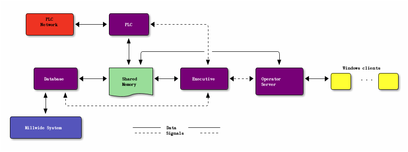
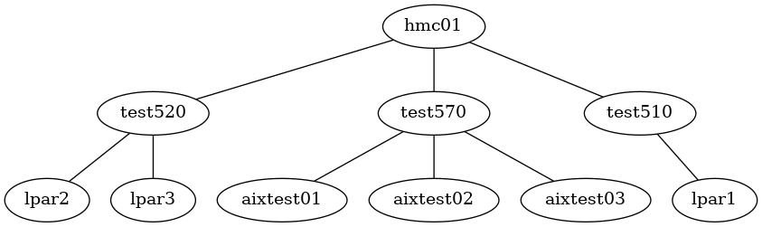
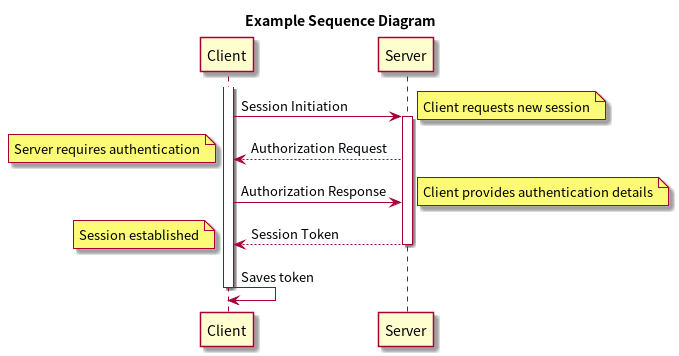

Org-Mode
Table of Contents
1 文字加强显示
~verbatim~ *bold* /italic/ _underlined_ =code= +strike-through+
实际效果： verbatim 、 bold 、 italic 、 underlined 、 code 、 strike-through
2 CheckBox运用
标题项打入[/]或是[%] -> 会自动显示[1/2]或[50%], 要打C-c #启动 C-c C-c 自动补全 - [ ] 选择一 (checkbox) - [X] 选择二
3 超链接
3.1 内部链接
定义描点： #<<target>> 如下方式可以设置到target的链接： [[target]] 或 [[target][description]]
3.2 外部链接
[[Link][说明]]
3.3 脚注
| C-c C-x f | 脚注跳转或者生成 |
| C-u C-c C-x f | 删除，更新脚注序号等操作 |
Footnote引用处格式: [1]、[fn:name]
4 表格
输入内容：
| Name | Phone | Age | |-------+-------+-----| | Peter | 1234 | 17 |
可使用Tab进行补全：
#+CAPTION: 标题区域 #+ATTR_HTML: border="1" rules="all" frame="border" | Name | Phone | Age | |-------+-------+-----| | Peter | 1234 | 17 |
实际表格显示：
| Name | Phone | Age |
|---|---|---|
| Peter | 1234 | 17 |
4.1 某单元格有过长的内容，编辑时需隐藏
| | <6> | | 1 | one | | 2 | two | | 3 | This is iureireu | | 4 | four |
6为固定长度，=>表示该单元格多出的内容将隐藏，【C-c `】编辑其中内容。 Tab之后变为：
| | <6> | | 1 | one | | 2 | two | | 3 | This=> | | 4 | four |
5 内容元数据
org-mode中有以下几种块
s #+begin_src ... #+end_src e #+begin_example ... #+end_example : 单行的例子以冒号开头 q #+begin_quote ... #+end_quote 通常用于引用，与默认格式相比左右都会留出缩进 v #+begin_verse ... #+end_verse 默认内容不换行，需要留出空行才能换行 c #+begin_center ... #+end_center l #+begin_latex ... #+end_latex L #+latex: h #+begin_html ... #+end_html H #+html: a #+begin_ascii ... #+end_ascii A #+ascii: i #+index: line I #+include: line 代码 上面的单字母为快捷键字母，如输入一个<s 然后TAB #+begin_src c -n -t -h 7 -w 40 #+end_src 其中： c为所添加的语言 -n 显示行号 -t 清除格式 -h 7 设置高度为7 -w 40设置宽度为40
区块内的缩进使用 C-c '
6 发布
Org 包含一个发布管理系统，可以配置一个由相互链接的 Org 文件组成的工程项目的自动向 HTML 转换。
你也可以设置 Org，将导出的 HTML 页面和相应的附件如图片，源代 码文件等自动上传到服务器。
(setq org-publish-project-alist '(("note-org" :base-directory "~/Dropbox/orgProject/Notes/org" :publishing-directory "~/Dropbox/orgProject/Notes/html" :base-extension "org" :recursive t :publishing-function org-publish-org-to-html :headline-levels 3 ; Just the default for this project. :auto-index nil :link-home "index.html" :section-numbers nil :html-preamble nil :html-postamble t :auto-sitemap t ; Generate sitemap.org automagically... :sitemap-title "ChrisChen的笔记" :exclude "sitemap.org") ; ... call it sitemap.org (it's the default)... ("note-static" :base-directory "~/Dropbox/orgProject/Notes/resources" :publishing-directory "~/Dropbox/orgProject/Notes/html/resources" :recursive t :base-extension "css\\|js\\|png\\|jpg\\|gif\\|pdf\\|mp3\\|swf\\|zip\\|gz\\|txt\\|el" :publishing-function org-publish-attachment) ("note" :components ("note-org" "note-static") :author "ChrisChen3121@gmail.com" )))
6.1 html输出选项
TITLE: the title to be shown (default is the buffer name)
AUTHOR: the author (default taken from user-full-name)
DATE: a date, an Org timestamp1, or a format string for format-time-string
EMAIL: his/her email address (default from user-mail-address)
DESCRIPTION: the page description, e.g., for the XHTML meta tag
KEYWORDS: the page keywords, e.g., for the XHTML meta tag
LANGUAGE: language for HTML, e.g., ‘en’ (org-export-default-language)
TEXT: Some descriptive text to be inserted at the beginning.
TEXT: Several lines may be given.
OPTIONS: H:2 num:t toc:t \n:nil @:t ::t |:t ^:t f:t TeX:t ...
BIND: lisp-var lisp-val, e.g., org-export-latex-low-levels itemize
You need to confirm using these, or configure org-export-allow-BIND
LINK_UP: the ``up'' link of an exported page
LINK_HOME: the ``home'' link of an exported page
LaTeX_HEADER: extra line(s) for the LaTeX header, like \usepackage{xyz}
EXPORT_SELECT_TAGS: Tags that select a tree for export
EXPORT_EXCLUDE_TAGS: Tags that exclude a tree from export
XSLT: the XSLT stylesheet used by DocBook exporter to generate FO file
下面是OPTIONS附加选项
H: set the number of headline levels for export
num: turn on/off section-numbers
toc: turn on/off table of contents, or set level limit (integer)
\n: turn on/off line-break-preservation (DOES NOT WORK)
@: turn on/off quoted HTML tags
:: turn on/off fixed-width sections
|: turn on/off tables
^: turn on/off TeX-like syntax for sub- and superscripts. If
you write "^:{}", a_{b} will be interpreted, but
the simple a_b will be left as it is.
-: turn on/off conversion of special strings.
f: turn on/off footnotes like this[1].
todo: turn on/off inclusion of TODO keywords into exported text
tasks: turn on/off inclusion of tasks (TODO items), can be nil to remove
all tasks, todo to remove DONE tasks, or list of kwds to keep
pri: turn on/off priority cookies
tags: turn on/off inclusion of tags, may also be not-in-toc
<: turn on/off inclusion of any time/date stamps like DEADLINES
*: turn on/off emphasized text (bold, italic, underlined)
TeX: turn on/off simple TeX macros in plain text
LaTeX: configure export of LaTeX fragments. Default auto
skip: turn on/off skipping the text before the first heading
author: turn on/off inclusion of author name/email into exported file
email: turn on/off inclusion of author email into exported file
creator: turn on/off inclusion of creator info into exported file
timestamp: turn on/off inclusion creation time into exported file
d: turn on/off inclusion of drawers, or list drawers to include
6.2 PDF输出
需要如下工具:
- texlive-font-recommended
- texlive-latex-extra
- latex-cjk-all
- texlive-xetex
6.2.1 用法
7 TODOList
7.1 Agenda Buffer
进入Agenda
p/n (上/下)
L (另一个窗口显示agenda，并画面居中)
TAB(另一个窗口显示org文档)
ENTER (进入org文档，并关掉agenda)
F (跟随模式，移动光标，另一个org窗口档联动)
7.2 归档 归档
内部归档
内部归档是在本文件内部给特定子树打上 ACHIVED 标签或者移动到名为 ACHIVED 的子树中去并打上标签。
这个被认为是 ACIVED 的子树，会被移动了本级子树的最末端。
C-c C-x a 将某一个节点打上ARCHIVE标签
C-c C-x A 将当前节点归入一个名为Archive的子树中(推荐使用)
并且这个子树是位于当前级别子树的最下方
外部归档
外部归档是指把子树移动到另一个org文件中去。文件名可以自定义。默认情况下，归档的子树会被移动到名为“当前文件名_archived“的文件中去。
C-c C-x C-s 把当前的节点移到archived文件中去。
7.3 周期性TODO
TODO 开会 SCHEDULED: <2009-01-22 四 +1w> 1w表示每周，另外1d表示每天，1m表示每月。 对于周期性的任务， C-c C-t 每次将开始日期修改为相应的下一次开始日期，并保持 TODO 状态不变。 <2009-01-22 四 ++1w> 的下一次日期一定是今天之后的第一个星期四，而 <2009-01-22 四 .+1w> 的下一次日期是按今天算起的下一个星期，也就是说， 不一定是星期四；如果今天是星期二，那么下一次开始日期就是星期二。
7.4 每日流程
- Punch in
- Find important things to deal with
- Read email/news(make responses)
- Clock in important tasks
- Make journal
- Punch out for lunch and bunch back in after lunch
- Work on more tasks
- Refile tasks
- Mark habits done today as DONE
- Punch out at the end of the work day
8 生成图片
8.1 artist-mode and ditaa

8.2 graphviz

8.3 plantuml

9 快捷键
9.1 树操作
| S+Tab | 全局展开收缩树 |
| Tab | 单个树展开收缩 |
| M+←/→ | 当前节点目录层级操作 |
| M+S+←/→ | 当前节点及子节点层级操作 |
| M+↑/↓ | 移动当前节点(同级) |
9.2 TODOList操作
| M-S-ENTER | 增加新的平级TODO项 |
| C-c C-c | 勾选CheckBox |
| C-c , 或者 S-↑/↓直接调整 | 加入优先级 |
9.3 tag
| C-c C-q | 编辑添加tag |
| C-c \ | 检索tag |
9.4 timestamp
| C-c . | 增加时间戳 |
| C-c C-d | Deadline |
| C-c C-s | Scheduled |
9.5 Cursor move
| C-c C-n/p | 下/上个标题 |
| C-c C-f/b | 下/上个同级标题 |
| C-c C-u | 上一级标题 |
9.6 Table
| M-←/→/↑/↓ | 单元格间移动 |
| M-S-←/→ | 删除/新增列 |
| M-S-↑/↓ | 删除/新增行 |
9.7 Publish
| C-c C-e C | 提示指明一个项目，将所有文件发布 |
| C-c C-e F | 只发布当前文件 |
| C-c C-e P | 发布包含当前文件的项目 |
| C-c C-e E | 发布所有项目 |
9.8 Footnote
| C-c C-x f | 新建脚注 |
| C-u C-c C-x f | 编辑脚注(排序，重编号等) |